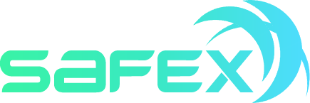
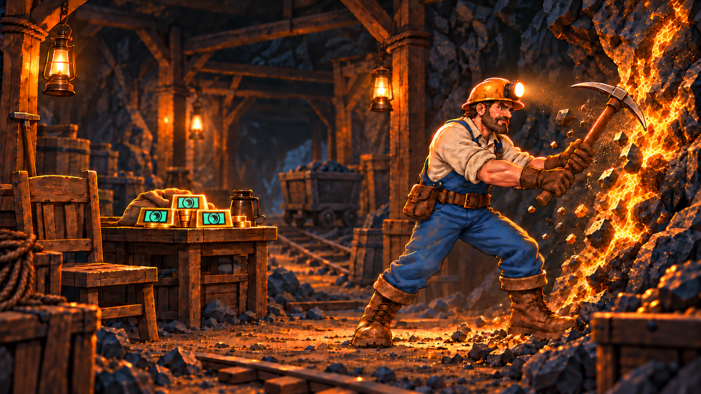
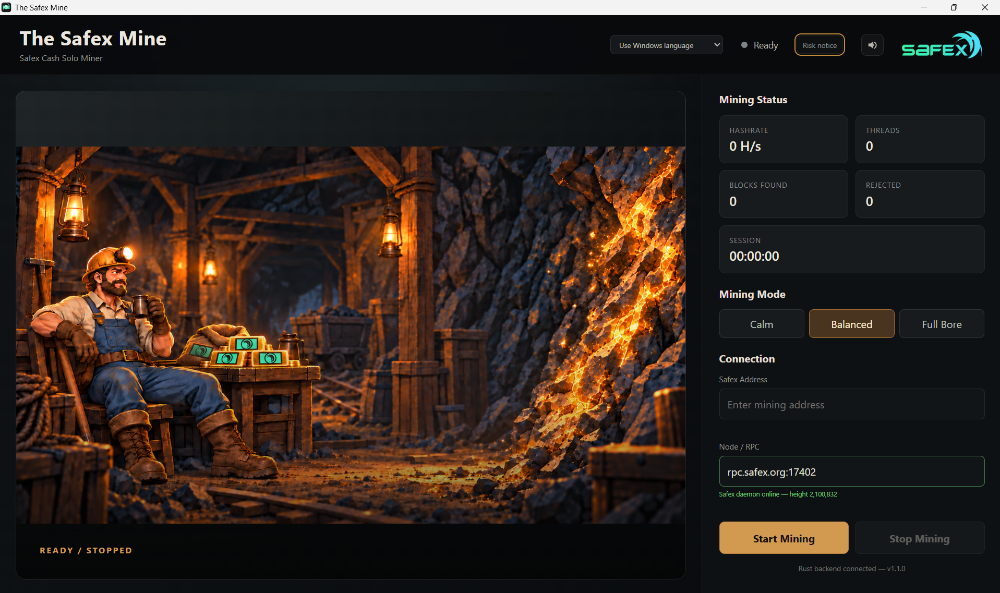

Safex Cash solo mining
Uses the Safex-compatible XMRig backend with rx/sfx, the public rpc.safex.org:17402 endpoint by default, and optional custom or LAN nodes.

Community Safex Cash mining application
A focused Windows desktop miner with three CPU profiles, live mining status, Safex address validation and a narrowly scoped elevated helper for XMRig/MSR operation.

Purpose-built
Uses the Safex-compatible XMRig backend with rx/sfx, the public rpc.safex.org:17402 endpoint by default, and optional custom or LAN nodes.
Calm, Balanced and Full Bore make it easy to choose between lower load and maximum CPU allocation.
See hashrate, worker threads, session time, accepted blocks, rejected results and connection state while you mine.
The graphical app remains a standard-user process. Only a narrowly scoped helper is elevated to supervise XMRig and allow MSR optimisation.
The real application
The interface keeps controls and statistics steady while authored mine scenes reflect READY, MINING, BLOCK FOUND, REJECTED and OFFLINE states.

Choose your load
Lower CPU allocation for less heat, noise and system load.
Strong mining performance while leaving more headroom for the rest of the system.
The highest CPU allocation available to the miner. Actual hashrate still depends on hardware, cooling and system limits.
Install with care
The Safex Mine is unsigned and includes a CPU miner, elevated helper and WinRing driver. SmartScreen or antivirus software may warn about or quarantine the installer or runtime.
Multilingual v1.1.0
English (Australia) is canonical, with 23 release-enabled translated locales. Your browser language is used when possible, and you can override it at any time.
Translations are AI-assisted community-project localisation, not professional, native-speaker or legal certification. Terminology corrections are welcome.
Open source
The public repository documents the application architecture, privilege model, mining backend integration, installation process, licences and release testing.